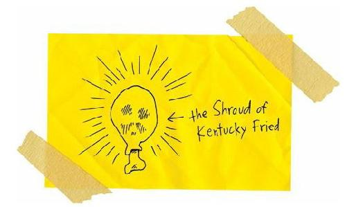
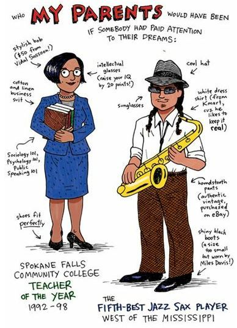

Why Chicken Means So Much to Me
Okay, so now you know that I’m a cartoonist. And I think I’m pretty good at it, too. But no matter how good I am, my cartoons will never take the place of food or money. I wish I could draw a peanut butter and jelly sandwich, or a fist full of twenty dollar bills, and perform some magic trick and make it real. But I can’t do that. Nobody can do that, not even the hungriest magician in the world.
I wish I were magical, but I am really just a poor-ass reservation kid living with his poor-ass family on the poor-ass Spokane Indian Reservation.
Do you know the worst thing about being poor? Oh, maybe you’ve done the math in your head and you figure:
Poverty = empty refrigerator + empty stomach
And sure, sometimes, my family misses a meal, and sleep is the only thing we have for dinner, but I know that, sooner or later, my parents will come bursting through the door with a bucket of Kentucky Fried Chicken.
Original Recipe.
And hey, in a weird way, being hungry makes food taste better. There is nothing better than a chicken leg when you haven’t eaten for (approximately) eighteen-and-a-half hours. And believe me, a good piece of chicken can make anybody believe in the existence of God.

So hunger is not the worst thing about being poor.
And now I’m sure you’re asking, “Okay, okay, Mr. Hunger Artist, Mr. Mouth-Full-of-Words, Mr. Woe-Is-Me, Mr. Secret Recipe, what is the worst thing about being poor?”
So, okay, I’ll tell you the worst thing.
Last week, my best friend Oscar got really sick.
At first, I thought he just had heat exhaustion or something. I mean, it was a crazy-hot July day (102 degrees with 90 percent humidity), and plenty of people were falling over from heat exhaustion, so why not a little dog wearing a fur coat?
I tried to give him some water, but he didn’t want any of that.
He was lying on his bed with red, watery, snotty eyes. He whimpered in pain. When I touched him, he yelped like crazy.
It was like his nerves were poking out three inches from his skin.
I figured he’d be okay with some rest, but then he started vomiting, and diarrhea blasted out of him, and he had these seizures where his little legs just kicked and kicked and kicked.
And sure, Oscar was only an adopted stray mutt, but he was the only living thing that I could depend on. He was more dependable than my parents, grandmother, aunts, uncles, cousins, and big sister. He taught me more than any teachers ever did.
Honestly, Oscar was a better person than any human I had ever known.
“Mom,” I said. “We have to take Oscar to the vet.”
“He’ll be all right,” she said.
But she was lying. Her eyes always got darker in the middle when she lied. She was a Spokane Indian and a bad liar, which didn’t make any sense. We Indians really should be better liars, considering how often we’ve been lied to.
“He’s really sick, Mom,” I said. “He’s going to die if we don’t take him to the doctor.”
She looked hard at me. And her eyes weren’t dark anymore, so I knew that she was going to tell me the truth. And trust me, there are times when the last thing you want to hear is the truth.
“Junior, sweetheart,” Mom said. “I’m sorry, but we don’t have any money for Oscar.”
“I’ll pay you back,” I said. “I promise.”
“Honey, it’ll cost hundreds of dollars, maybe a thousand.”
“I’ll pay back the doctor. I’ll get a job.”
Mom smiled all sad and hugged me hard.
Jeez, how stupid was I? What kind of job can a reservation Indian boy get? I was too young to deal blackjack at the casino, there were only about fifteen green grass lawns on the reservation (and none of their owners outsourced the mowing jobs), and the only paper route was owned by a tribal elder named Wally. And he had to deliver only fifty papers, so his job was more like a hobby.
There was nothing I could do to save Oscar.
Nothing.
Nothing.
Nothing.
So I lay down on the floor beside him and patted his head and whispered his name for hours.
Then Dad came home from wherever and had one of those long talks with Mom, and they decided something without me.
And then Dad pulled down his rifle and bullets from the closet.
“Junior,” he said. “Carry Oscar outside.”
“No!” I screamed.
“He’s suffering,” Dad said. “We have to help him.”
“You can’t do it!” I shouted.
I wanted to punch my dad in the face. I wanted to punch him in the nose and make him bleed. I wanted to punch him in the eye and make him blind. I wanted to kick him in the balls and make him pass out.
I was hot mad. Volcano mad. Tsunami mad.
Dad just looked down at me with the saddest look in his eyes. He was crying. He looked weak.
I wanted to hate him for his weakness.
I wanted to hate Dad and Mom for our poverty.
I wanted to blame them for my sick dog and for all the other sickness in the world.
But I can’t blame my parents for our poverty because my mother and father are the twin suns around which I orbit and my world would EXPLODE without them.
And it’s not like my mother and father were born into wealth. It’s not like they gambled away their family fortunes. My parents came from poor people who came from poor people who came from poor people, all the way back to the very first poor people.
Adam and Eve covered their privates with fig leaves; the first Indians covered their privates with their tiny hands.
Seriously, I know my mother and father had their dreams when they were kids. They dreamed about being something other than poor, but they never got the chance to be anything because nobody paid attention to their dreams.
Given the chance, my mother would have gone to college.
She still reads books like crazy. She buys them by the pound. And she remembers everything she reads. She can recite whole pages by memory. She’s a human tape recorder. Really, my mom can read the newspaper in fifteen minutes and tell me baseball scores, the location of every war, the latest guy to win the Lottery, and the high temperature in Des Moines, Iowa.

Given the chance, my father would have been a musician.
When he gets drunk, he sings old country songs. And blues, too. And he sounds good. Like a pro. Like he should be on the radio. He plays the guitar and the piano a little bit. And he has this old saxophone from high school that he keeps all clean and shiny, like he’s going to join a band at any moment.
But we reservation Indians don’t get to realize our dreams. We don’t get those chances. Or choices. We’re just poor. That’s all we are.
It sucks to be poor, and it sucks to feel that you somehow deserve to be poor. You start believing that you’re poor because you’re stupid and ugly. And then you start believing that you’re stupid and ugly because you’re Indian. And because you’re Indian you start believing you’re destined to be poor. It’s an ugly circle and there’s nothing you can do about it.
Poverty doesn’t give you strength or teach you lessons about perseverance. No, poverty only teaches you how to be poor.
So, poor and small and weak, I picked up Oscar. He licked my face because he loved and trusted me. And I carried him out to the lawn, and I laid him down beneath our green apple tree.
“I love you, Oscar,” I said.
He looked at me and I swear to you that he understood what was happening. He knew what Dad was going to do. But Oscar wasn’t scared. He was relieved.
But not me.
I ran away from there as fast as I could.
I wanted to run faster than the speed of sound, but nobody, no matter how much pain they’re in, can run that fast. So I heard the boom of my father’s rifle when he shot my best friend.
A bullet only costs about two cents, and anybody can afford that.